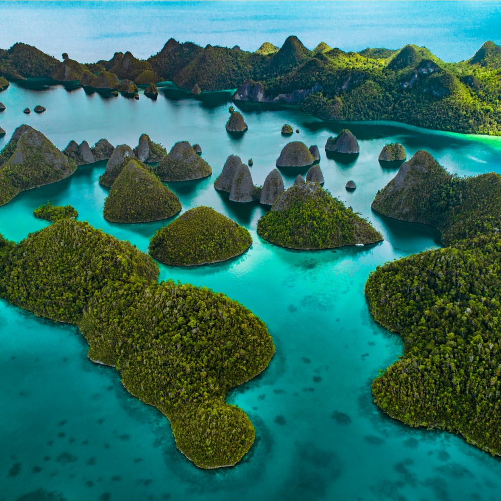

Raja Ampat merupakan salah satu tujuan wisata yang menjadi
perbincangan saat ini, tempat wisata ini terletak di Timur
Indonesia yaitu provinsi Papua Barat. Keindahan alam yang
disuguhkan di sana menjadi daya tarik para traveler dari dalam
maupun luar negeri.
Nusa Penida sangat banyak menawarkan objek wisata yang lokasi nya
tidak berjauhan, jadi sehari sudah cukup untuk tour keliling nusa
penida. Biaya pun tidak mahal, cukup sewa motor , kamu sudah bisa
keliling pulau nusa penida